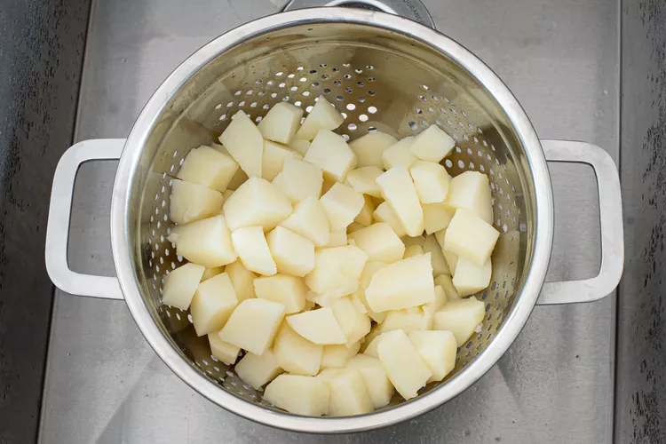
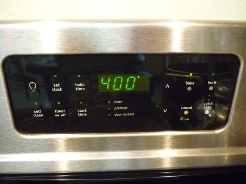
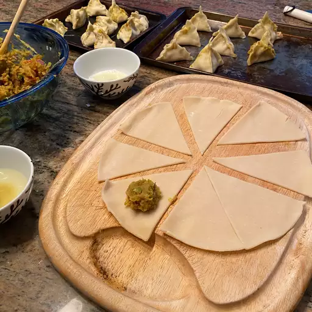
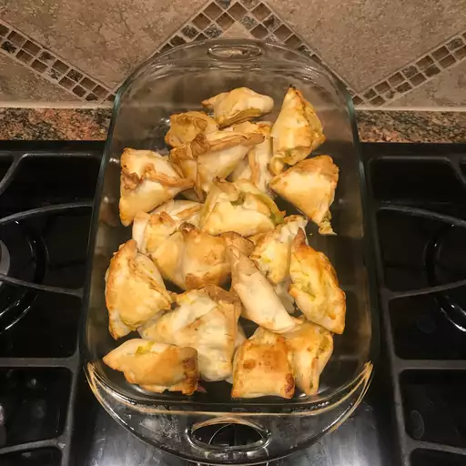

Easy Baked Indian Samosas

Easy Baked Indian Samosas
These baked samosas have all the flavor and heartiness without frying. Although this is an easier, healthier version, they taste just as delicious as fried samosas. Serve warm, plain, or with chutney.
Ingredients
- 4 potatoes, peeled and cubed
- ¼ cup vegetable oil
- 2 small onions, finely chopped
- 3 tablespoons coriander seed
- 1 tablespoon curry powder
- 1 (1 inch) piece fresh ginger, grated
- 1 teaspoon salt
- 1 teaspoon ground turmeric
- 1 teaspoon ground cumin
- ½ teaspoon ground allspice
- ½ teaspoon cayenne pepper
- ⅛ teaspoon ground cinnamon
- 2 Roma (plum) tomatoes, finely chopped
- ½ cup frozen peas
- 2 (14.1 ounce) packages double-crust pie crusts, thawed
- 2 large egg whites, beaten, or as needed
Directions
- Place potatoes into a large pot and cover with salted water; bring to a boil. Reduce heat to medium-low and simmer until tender, about 20 minutes. Drain and transfer potatoes to a large bowl; mash coarsely, then set aside.

- Preheat the oven to 400 degrees F (200 degrees C).

- Heat oil in a large skillet over medium-high heat; cook and stir onions, coriander seed, curry powder, ginger, salt, turmeric, cumin, allspice, cayenne pepper, and cinnamon in hot oil until onion is lightly browned, about 5 minutes. Remove the skillet from heat and stir in tomatoes and peas. Pour into coarsely mashed potatoes and mix until thoroughly combined. Cool filling completely.

- Cut each pie crust into 8 equal triangles. Spoon filling onto the wide end of each triangle; fold corners over filling to create a triangle-shaped hat. Pinch dough together to form a seal. Brush beaten egg whites over each samosa and arrange on baking sheets.

- Bake in the preheated oven until samosas are golden brown, about 15 minutes.